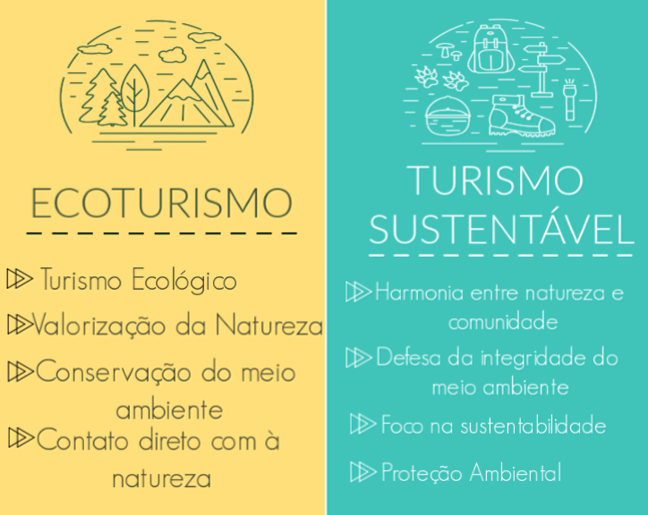

Os conceitos de Ecoturismo e Turismo Sustentável, apesar de algumas vezes serem tratados como sinônimos, apresentam definições e características diferentes. Enquanto o Ecoturismo abrange todas as atividades turísticas que têm como objetivo o contato com ecossistemas em seu estado natural, a vida selvagem e a população nativa dos locais; o Turismo Sustentável, por sua vez, traz consigo uma preocupação em garantir que tais atividades não desencadeiem efeitos negativos ao meio ambiente. Confira abaixo mais informações :
Também conhecido como turismo ecológico, o ecoturismo foi introduzido no Brasil com o intuito de valorizar a natureza, seguindo uma tendência mundial. Com o tempo, esse conceito se tornou popular e tem funcionado principalmente como marketing para empresas.
De acordo com o Ministério do Meio Ambiente e a EMBRATUR, “ecoturismo é um segmento da atividade turística que utiliza, de forma sustentável, o patrimônio natural e cultural, incentiva sua conservação e busca a formação de uma consciência ambientalista por meio da interpretação do ambiente, promovendo o bem-estar das populações”.
Ou seja, de acordo com essa definição, no ecoturismo há um contato direto com o meio ambiente, preservando não somente a natureza, mas criando, dessa maneira, uma cultura que tem como objetivo conservá-la.
Porém, nem sempre é assim que o ecoturismo é desenvolvido. Muitas vezes, esse conceito é atrelado somente ao turismo ecológico, deixando a consciência de preservação de lado. Por isso, é importante entender como se dá o desenvolvimento dessa atividade, garantindo que ela será cumprida corretamente.
Esse é o ramo do turismo que mais cresce. Isso acontece pois o ecoturismo tem como diferencial a realização de atividades que visam promover o conhecimento e a vivência com o meio ambiente — ele está fundamentado não somente na sustentabilidade, mas também na conservação e na educação.
É uma vertente que veio introduzir uma mudança de paradigma: o turismo pode ser uma atividade que oferece incentivos econômicos eficazes para a conservação do meio ambiente, fazendo disso uma prática constante e não obrigatória.
Para que isso aconteça, é necessário que a oferta turística nesse segmento inclua, além de serviços comuns já realizados — como transporte, hospedagem, alimentação, recepção e agenciamento —, atividades que permitam a integração dos turistas com o meio ambiente. Somente dessa maneira pode-se conscientizar a preservação da natureza, tornando essa uma atitude frequente.

Agora que você já conhece as características de cada uma dessas atividades, já pode diferenciá-las, concorda? É preciso ressaltar, ainda, que o ecoturismo está fundamentado em dois pilares da sustentabilidade: o econômico e o ambiental — complementando suas atividades com ações baseadas no setor político e cultural da sociedade.
Já o turismo sustentável leva em consideração todos os aspectos relacionados à sustentabilidade, englobando os diversos segmentos da atividade turística — econômicos, sociais e culturais.
É importante lembrar, por fim, que no primeiro caso trata-se de um segmento do turismo — ao contrário do segundo, que se aplica a todos os setores envolvidos nessa atividade. Percebeu como é importante conhecer a diferença entre esses segmentos?
Não se esqueça de ter atenção quanto à conduta das empresas que dizem praticar o ecoturismo ou o turismo sustentável. Nem sempre um empreendimento que está localizado em um centro turístico ou em uma área verde está envolvido com esse tipo de atividade!